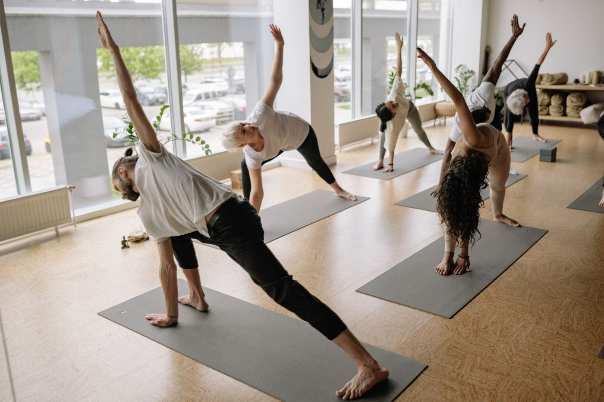

Capoeira Mandinga Tucson
Capoeira in Tucson since 1996, for families, kids, teens, and adults.

About
Capoeira Mandinga Tucson is a capoeira group in Tucson, founded in 1996 by Anne Pollack, Mestra Luar do Sertao, the highest level master in Arizona, and part of the worldwide Capoeira Mandinga group. The group offers capoeira classes for families with children ages 4 and up, kids ages 6 to 12, and teens and adults, honoring capoeira movement and music traditions.
Classes and community
Capoeira for families
Capoeira classes for families with children ages 4 and up.
Kids classes
Capoeira classes for kids ages 6 to 12.
Teen and adult classes
Movement and music traditions
Classes honoring capoeira movement and music traditions.
Workshops, shows, and events
Workshops, shows, and events for underserved kids and families, run by the nonprofit Capoeira Institute Southwest.
Founded 1996 by Mestra Luar do Sertao
Capoeira Mandinga Tucson was founded in 1996 by Anne Pollack, Mestra Luar do Sertao, the highest level master in Arizona. The nonprofit Capoeira Institute Southwest runs classes, workshops, shows, and events for underserved kids and families. Call (520) 975-6539 or email Luar@capoeiratucson.com to ask about a class.
Gallery


All gallery photos are stock photos, labeled as such. They show yoga classes, not this group's capoeira classes.
Visit
Address: 605 East Sixth Street, Tucson, AZ 85705
Hours: Tuesday and Thursday 4:00 PM to 9:00 PM. Saturday 9:00 AM to 2:00 PM.
Phone: (520) 975-6539
Email: Luar@capoeiratucson.com
Contact
Call (520) 975-6539 Email Luar@capoeiratucson.com
Capoeira Mandinga Tucson serves Tucson, AZ. Questions? Call (520) 975-6539.